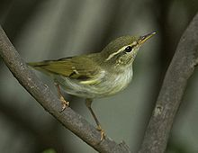
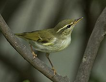

| Arctic Warbler | |
|---|---|
|  | |
| Conservation status | |
| Binomial name | |
| Phylloscopus borealis (Blasius,H, 1858) |
| Arctic Warbler | |
|---|---|
|  | |
| Conservation status | |
| Binomial name | |
| Phylloscopus borealis (Blasius,H, 1858) |
The Arctic Warbler, Phylloscopus borealis, is a widespread leaf warbler in birch or mixed birch forest near water throughout its breeding range in Fennoscandia and northern Asia. It has established a foothold in North America, breeding in Alaska.
The nest is on the ground in a low shrub. Like most Old World warblers, this small passerine is insectivorous.
This warbler is strongly migratory; the entire population winters in southeast Asia. It therefore has one of the longest migrations of any Old World insectivorous bird.
This is a typical leaf warbler in appearance, greyish-green above and off-white below. Its single wing bar distinguishes it from most similar species except the Greenish Warbler, Phylloscopus trochiloides. It is larger than that species and has a heavier, dagger-like bill, with a dark tip to the lower mandible. Its song is a fast trill.
This species occurs as an autumn vagrant in western Europe and is annual in Great Britain.

{kind=link}